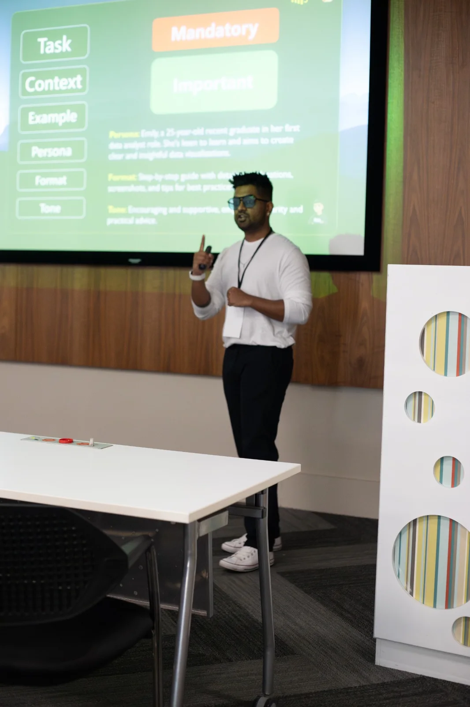

What is data analytics?
Turning raw data into understanding, better decisions and clear action.
Role-based data, analytics, Power BI, Fabric and AI-readiness learning that builds confidence inside the work—without taking an entire team offline.
No sign-up needed. Leave with a personalised starting point.
Turning raw data into understanding, better decisions and clear action.
Technology that learns from patterns to predict, generate and assist—while people remain responsible for the judgement.
No. You need the confidence to ask better questions, interpret evidence and explain what should happen next.
It helps teams see problems earlier, understand performance and make decisions with stronger evidence.
Choose a question. Get a clear, plain-language answer.
Choose the answers that feel most like you. There are no trick questions and no technical test. You will unlock a confidence level, a completion badge and a recommended learning path.
Organisations already have reports, dashboards and AI assistants. The gap is often the human capability to question, interpret, communicate and act on what those tools produce.
Teams can see the numbers but not always the meaning, context or next move.
Managers cannot release a full team for days without creating operational risk.
Once-off content rarely survives real deadlines, messy data and stakeholder pressure.
Executives, managers, business professionals and analysts need different levels of data confidence. Choose the role first, then shape the learning around the work they actually do.
Get up to speed quickly on analytics, dashboards, KPIs and AI—without a degree, long course or technical background.
Learn what analytics means, how data can help your role and how to read reports without needing to become a data specialist.
Use business questions, KPIs and evidence to run clearer performance conversations and make better decisions.
Build reports and presentations people understand, trust and act on—using clear stories, visuals and dashboard design.
These are cohort-based planning estimates. The displayed programme fee is the minimum for one live cohort; extra cohort fees apply only when team size or BAU protection requires additional groups. Qualifying corporate programmes include the Notabot 2% Impact Commitment at no extra cost.
Power BI and Microsoft Fabric sit in their own learning paths. We still teach them through real business questions—not as a tour of buttons and menus.
Build practical reporting skills from importing data and creating measures to designing clear, useful dashboards.
Understand where Fabric fits, how data moves through the platform and what business, analyst and technical teams need to know.
Short, beginner-friendly public courses for people who want to understand analytics, improve how they use information at work or explore a future in data.
Understand what data analytics is, the questions it answers and how organisations use it to solve problems.
See how data can help in finance, HR, sales, operations, marketing, projects or another business role.
Learn which chart to use, how to avoid misleading visuals and how to make information easier to understand.
Turn numbers into a clear message, explain the context and recommend the next action with confidence.
The planner recommends a delivery model based on programme complexity, team size and how strongly you need to protect BAU.
The Notabot Impact Commitment turns learning into shared value. The client chooses a verified cause, Notabot funds the contribution, and the outcome is documented clearly.
Select youth education, digital inclusion, women in technology, employment readiness—or nominate a verified organisation.
The contribution comes from our programme revenue. It is not an extra line item added to the client’s quote.
We share proof of payment and a Notabot Impact Certificate after the contribution is completed.
For qualifying corporate programmes. Calculated at 2% of the programme fee received, excluding VAT, travel, reimbursable expenses and third-party costs; capped at R5,000 per engagement. Donations are made to verified organisations after full payment. The Notabot Impact Certificate confirms the contribution but is not a tax receipt; any official tax acknowledgement must come from the recipient organisation where available.
Every programme protects operational coverage while helping people apply learning between sessions.
Clarify the audience, business outcome, confidence level and operational constraints before designing the learning.
Executives, managers, business users and report builders learn only what their role requires.
Focused cohorts keep BAU covered while people apply the learning between sessions.
Participants use real problems, dashboards and KPIs, then return for a focused support session.
You do not need a degree or a long course to understand data in the meeting. This focused briefing helps leaders understand the numbers, challenge assumptions and know what to ask their data and AI teams.

Notabot exists to empower and enable people who want to learn more, solve meaningful problems and improve the industries they work in.
The next great analyst, data champion or problem-solver may not carry that title yet. They may simply need the right language, support and opportunity to unlock their confidence.
Whether you are planning learning for a team or starting on your own, tell us who it is for and what you want to become more confident with. We will recommend a clear next step.